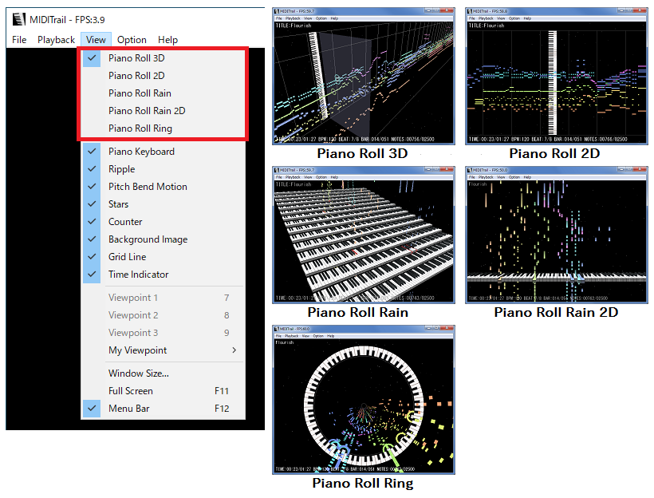
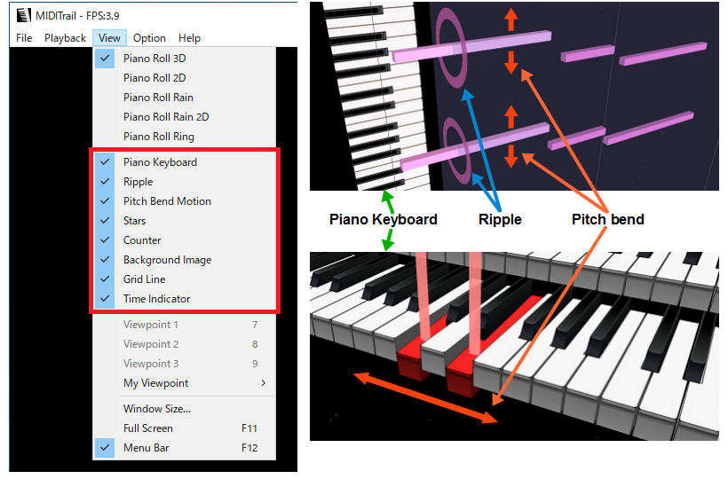

MIDITrail Ver.1.3.6 for Windows User Manual
Copyright (c) 2010-2022, WADA Masashi All rights reserved.
Web: https://osdn.jp/projects/miditrail/
Mail:
Contents
1. Introduction
2. System requirement
3. How to install and execute
4. Usage
5. Restriction
6. FAQ
7. How to customize
8. Appendix
9. Copyright and license
10. History
1. Introduction
"MIDITrail" is a MIDI player which provides 3D visualization of MIDI datasets.
You can enjoy not only listening but also viewing.
MIDITrail supports SMF format 0/1, and multiple MIDI ports.
MIDITrail is available for Windows, macOS and iOS.
Screenshot: PianoRoll3D
Screenshot: PianoRollRain
2. System requirement
OS: Windows 7 / 8 / 10 / 11
VIDEO: Support for DirectX 9.0c graphics
It is recommended that your PC has high performance graphics for smooth animation.
If the MIDI datasets contains a lot of notes, the software needs more performance graphics.
As long as the performance of your PC allows, please enjoy MIDITrail with large window.
MIDITrail Ver.1.2.5 or later does not support Windows 2000 / XP / Vista.
Please use MIDITrail Ver.1.2.4 on Windows 2000 / XP / Vista.
3. How to install and execute
(1) How to install
Extract ZIP file, and execute "MIDITrail.exe".
ZIP file name
MIDITrail-Ver.X.X.X-Windows.zip -- MIDITrail 32bit version
MIDITrail-Ver.X.X.X-Windows64.zip -- MIDITrail 64bit version
(2) First setup
At first, you must setup the MIDI OUT port.
Select "MIDI OUT..." from "Option" menu, then "MIDI OUT configuration" dialog will appear.
[Port A]
At least, you must select the MIDI OUT device of "port A".
Ordinary MIDI datasets is sent to "Port A".
[Port B,C,D,E,F]
If you want to play the MIDI datasets which uses multiple ports,
you must select the MIDI OUT device of port B, C, and so on.
NOTICE: To play the MIDI datasets which uses multiple ports,
it is necessary to prepare MIDI interface and MIDI module which supports multiple ports.
(3) How to uninstall
Delete "MIDITrail" folder which contains "MIDITrail.exe". MIDITrail doesn't use registry.
(4) How to open Recomposer data files
Recomposer is an old popular MIDI sequence software in Japan.
MIDITrail can open Recomposer data files (*.rcp *.r36 *.g36)
using RCPCV.DLL (Recomposer File Converter) which Mr. Fummy releases.
If you want to open Recomposer data files,
please download RCPCV.DLL and copy it to the folder "MIDITrail.exe" exists.
Incidentally, MIDITrail(32bit) can load RCPCV.DLL, but MIDITrail(64bit) can not load RCPCV.DLL.
RCPCV.DLL http://www.vector.co.jp/soft/win95/art/se114143.html
4. Usage
(1) How to open a MIDI file
Select "Open File..." from "File" menu, the Open File dialog will appear. And choose a Standard MIDI File (*.mid).
Or you can drag and drop a MIDI file into the window of MIDITrail.
If you prepared RCPCV.DLL, MIDITrail can open the Recomposer data files (*.rcp *.r36 *.g36). Please refer to "3.(4) How to open Recomposer data files" for details.
(2) How to play/pause/resume/stop
Push the following keys, or use "Playback" menu.
| Key | Action |
|---|---|
| SPACE | Play / Pause / Resume |
| ESC | Stop |
| 12 | Skip Back / Skip Forward |
| 45 | Playback Speed Down / Up |
| F2 | Double speed playback |
(3) Folder Playback
MIDITrail can open MIDI data files stored in folder in sequence. MIDITrail opens the files in ascending order by filename.
1. Folder selection
When you select "Open Folder..." from "File" menu, the folder selection dialog will appear.
Here you have to select the folder that contains the Standard MIDI File (*.mid).
You can also drag and drop the forlder into the window of MIDITrail.
2. File switching
You can switch the MIDI data file by selecting "Previous File" and "Next File" from "File" menu.
You can also use the following keyboard shortcut.
| Key | Action |
|---|---|
| CTRL + B CTRL + P |
Open previous file. |
| CTRL + N | Open next file. |
3. Folder Playback
When you select "Folder Playback" from "Playback" menu, MIDITrail playback the next file after end of playback automatically.
(4) How to move viewpoint in 3D space
You can move freely in 3D space, and look at MIDI datasets from all directions
by operation of keyboard and mouse, like FPS (First Person Shooter) game.
Although there is sense of incongruity in the beginning,
it will be very comfortable as experience is gained.
Mouse operation
When you click the window, it will become the view control mode by the mouse,
and mouse cursor will disappear.
The eye direction synchronizes movement of your mouse.
If you click once again, view control mode will be canceled.
And you can rotate piano roll using mouse wheel.
Keyboard operation
Put your index finger on D, middle finger on W, third finger on A.
| Key | Action |
|---|---|
| WS | It moves forward and backward. |
| AD | It moves left and right. |
| QE | It goes up and down. |
| ZC | It moves along the direction of MIDI datasets. (In PinoRollRain, it moves along the piano keyboard.) |
|
SHIFT + [WS] SHIFT + [AD] SHIFT + [QE] SHIFT + [ZC] |
When you push move key with SHIFT key, you can move at high speed. |
|
CTRL + [WS] CTRL + [AD] |
You can control the eye direction. |
For a left-handed person
You can also use a cursor key. If you use a mouse with your left hand, this one may be convenience.
| Key | Action |
|---|---|
| ↑↓ | It moves forward and backward. |
| ←→ | It moves left and right. |
| PgUpPgDn | It goes up and down. |
| ,. | It moves along the direction of MIDI datasets. (In PinoRollRain, it moves along the piano keyboard.) |
|
SHIFT + [↑↓] SHIFT + [←→] SHIFT + [PgUpPgDn] SHIFT + [,.] |
When you push move key with SHIFT key, you can move at high speed. |
|
CTRL + [↑↓] CTRL + [←→] |
You can control the eye direction. |
(5) Selection of the viewpoint
When you select "Viewpoint 1 / 2 / 3" from "View" menu, or when you push following key, you can move to a fixed viewpoint.
| Key | Action |
|---|---|
| 7 | Move to fixed viewpoint 1 |
| 8 | Move to fixed viewpoint 2 |
| 9 | Move to fixed viewpoint 3 |
When you select "My Viewpoint 1 / 2 / 3" from "View" menu,
or when you push following key, you can move to a viewpoint saved by the user in advance.
If you want to save current viewpoint, select "Save My Viewpoint 1 / 2 / 3" from "View" menu
or push following key.
| Key | Action |
|---|---|
| CTRL + 7 | Move to my viewpoint 1 |
| CTRL + 8 | Move to my viewpoint 2 |
| CTRL + 9 | Move to my viewpoint 3 |
| SHIFT + CTRL + 7 | Save my viewpoint 1 |
| SHIFT + CTRL + 8 | Save my viewpoint 2 |
| SHIFT + CTRL + 9 | Save my viewpoint 3 |
(6) Change of window size
When you select "Window size..." from "View" menu, the Window size configuration dialog will appear.
Select your favorite window size, and push the OK button.
You can not change window size while playing or pausing.
The window size you can select is depends on your PC.
If you want to specify any window size, fill in "Width" "Height".
If you want to apply that size to the view area, check "Apply to the view area".
(7) Full Screen
When you select "Full Screen" from "View" menu, you can switch between window mode and full screen mode.
By F11 key, you can switch the mode too.
(8) Display counters
| Counter | Details |
|---|---|
| FPS | Frame Per Second. |
| TITLE | Title of music. |
| TIME | Elapsed time. |
| BPM | Tempo (Beats Per Minute). |
| BEAT | Time signature. |
| BAR | Number of bars. |
| NOTES | Number of notes. |
| SPEED | Playback speed. |
(9) View mode select
You can select the view mode from "View" menu. You can not change the view mode while playing or pausing.

(10) Display/Effect switch
You can switch the display/effect at "View" menu.

The piano roll bar will move up/down or right/left with change of pitch bend.
Some MIDI animation works are using pitch bend to shift the piano roll bars without change keys.
If the MIDI animation is not displayed correctly, please disable the pitch bend effect to fix the piano roll bars.
(11) MIDITrail command line interface
If you want to start MIDITrail by command line, you can use following arguments.
MIDITrail.exe [-p] [-q] ["path\to\file"]
| argument | detail |
|---|---|
| -p | Play MIDI file after startup of MIDITrail. If you did not specify "path\to\file", this option will be ignored. |
| -q | End MIDITrail after end of playback. If option "-p" was not specified, this option will be ignored. |
| path\to\file | MIDI file path. When you specify a path including a space character, please surround with a double quotation mark. |
If you drop a MIDI file to the shortcut of MIDITrail, MIDITrail open the file on startup.
(12) Graphic configuration
Select "Graphic..." from "Option" menu, the graphic configuration dialog will appear.
You can not change graphic configuration while playing or pausing.
[Anti-aliasing]
If anti-aliasing is enabled, a notch (jaggy) will decrease and a more beautiful picture will be displayed.
However, since processing of anti-aliasing is heavy, performance may be poor when you select a upper level.
If your PC does not support anti-aliasing, it is displayed as "Not supported".
[Background image file path]
If you want to display the background image, specify the file path of the image.
The extension of the image file must be ".jpg" or ".png".
[Quarter note length]
You can change a quarter note length of piano roll.
You can specify a value from 0% to 1000%. The default value is 100%.
(13) MIDI IN Monitor
You can view data sets received from MIDI IN device in realtime.
Select "MIDI IN..." from "Option" menu, then "MIDI IN configuration" dialog will appear.
Select the MIDI IN device for monitoring.
If you check the MIDITHRU, MIDITrail will send data sets received from MIDI IN to MIDI OUT.
When you select "Start Monitoring" from "Playback" menu, MIDI IN monitoring will start.
NOTE: MIDITrail can not record data sets received from MIDI IN.
(14) Game Controller
You can operate by XInput game controller.
| Button / Stick | Action |
|---|---|
| START button | Play / Pause / Resume |
| A button | Play / Pause / Resume |
| B button | Stop |
| X button | Viewpoint: down |
| Y button | Viewpoint: up |
| LB/RB shoulder button | Change viewpoint |
| LT/RT trigger button | Skip back/forward |
| Directional pad | Viewpoint movement: front and back, right and left |
| Left stick | Viewpoint movement: front and back, right and left |
| Right stick | Eye direction |
NOTE: MIDITrail does not support DirectInput game controller.
5. Restriction
(1) Synchronization of MIDI sound and display
If you use the MIDI module which delays sound (such as software sound modules), the MIDI sound and display may not synchronize.
(2) Performance of graphics
MIDITrail renders all notes of the MIDI file in real time.
Therefore if MIDI file has a large number of notes, the load of rendering becomes high.
In order to enjoy MIDI file which contains tens of thousands of notes comfortably,
you have to use PC which has high performance graphics.
(3) Multiple ports
In specification of SMF (Standard MIDI File), a method to select port is not defined.
However there is the unofficial method (*1) to select port.
MIDITrail supports that method, but may be unable to play the MIDI file.
It depends on the MIDI file.
(*1) Meta event (FF 21 01 pp) is the command to select port.
(4) Time format of standard MIDI file
MIDITrail can't open the MIDI file whose delta time represents actual time.
6. FAQ
(1) Q. I got "d3dx9_**.dll was not found" error. I can't start MIDITrail.
The error occurs when the version of DirectX in your PC is old. Please install the latest version of "DirectX End-User Runtime".
Microsoft: DirectX End-User Runtimes (June 2010)
https://www.microsoft.com/en-us/download/details.aspx?id=8109
(2) Q. The animation is not smooth.
Please try to change window size to small, and turn off anti-aliasing. Then the load of rendering becomes low.
Check FPS value in window title.
If the FPS value is under 60, the performance of graphics is insufficient.
When MIDI file has a large number of notes, the load of rendering becomes high.
To confirm the performance of your PC, please try to open MIDI file which contains few notes.
If the animation does not improve, please use PC which has high performance graphics.
(3) Q. I want to customize the window size.
You can customize the window size. Please open following file by text editor, and edit "Width" and "Height".
Windows 7 / 8 / 10 / 11 C:\Users\(user name)\AppData\Roaming\yknk\MIDITrail\View.ini
[WindowSize] Width=800 Height=600
(4) Q. When I display the menu, the animation stops.
Sorry, it is a specification.
(5) Q. I got "DirectX API error. / FUNC: DXRenderer::Initialize / INFO: 8876086A" error.
If your PC does not support Direct3D, this error occurs.
Please execute "DirectX Diagnostic Tool"(dxdiag.exe), and select "Display" tab.
Is the "Direct3D Acceleration" enabled?
If you can't change "Direct3D Acceleration" to "Enabled", your PC does not support Direct3D.
Please use the PC which supports DirectX 9.0c graphics.
(6) Q. I want to change the ripple more showily.
You can change size of the ripple by editing configuration file.
Please Check "7. Customize - (2) Piano roll".
Change the value of "RippleHeight" and "RippleWidth" larger.
7. How to customize
You can customize MIDITrail as your like, by editing the files which is in "conf" folder.
| File | contents |
|---|---|
| conf/Player.ini | Player configuration |
| conf/PianoRoll3D.ini | View mode configuration: Piano Roll 3D |
| conf/PianoRoll2D.ini | View mode configuration: Piano Roll 2D |
| conf/PianoRollRain.ini | View mode configuration: Piano Roll Rain |
| conf/PianoRollRain2D.ini | View mode configuration: Piano Roll Rain 2D |
| conf/PianoRollRing.ini | View mode configuration: Piano Roll Ring |
| conf/PianoRoll3DLive.ini | View mode configuration: Piano Roll 3D (MIDI IN Monitor) |
| conf/PianoRoll2DLive.ini | View mode configuration: Piano Roll 2D (MIDI IN Monitor) |
| conf/PianoRollRainLive.ini | View mode configuration: Piano Roll Rain (MIDI IN Monitor) |
| conf/PianoRollRain2DLive.ini | View mode configuration: Piano Roll Rain 2D (MIDI IN Monitor) |
| conf/PianoRollRingLive.ini | View mode configuration: Piano Roll Ring (MIDI IN Monitor) |
(1) Player Configuration
(a) Player Control
Edit [PlayerControl] section.
| Name | Details |
|---|---|
| AllowMultipleInstance | Allow multiple instances of the MIDITrail (0:disallow / 1:allow) |
| AutoPlaybackAfterOpenFile | Playback automatically after opening file (0:disable / 1:enable) |
(b) View Control
Edit [ViewControl] section.
| Name | Details |
|---|---|
| ShowFileName | Show the file name insted of the title (0:disable / 1:enable) |
(c) Skip Control
Edit [SkipControl] section.
| Name | Details |
|---|---|
| SkipBackTimeSpanInMsec | Skip back time span (msec) |
| SkipForwardTimeSpanInMsec | Skip forward time span (msec) |
| MovingTimeSpanInMsec | Skip animation time span (msec) |
(d) Playback Speed Control
Edit [PlaybackSpeedControl] section.
| Name | Details |
|---|---|
| SpeedStepInPercent | Playback speed step (%) |
| MaxSpeedInPercent | Playback speed max ratio (%) |
(e) Playback Control
Edit [Playback] section.
| Name | Details |
|---|---|
| DelayBetweenSongsInMsec | Delay between songs (msec)（0 - 10000） |
(2) View Mode Configuration
(a) Moving speed of viewpoint
Edit [FirstPersonCam] section.
| Name | PR-3D/2D | PR-Rain/2D | PR-Ring | Details |
|---|---|---|---|---|
| VelocityFB | yes | yes | yes | Velocity of forward and backward. (m/s) |
| VelocityLR | yes | yes | yes | Velocity of left and right. (m/s) |
| VelocityUD | yes | yes | yes | Velocity of up and down. (m/s) |
| VelocityPT | yes | yes | yes | Angular velocity of look. (degree/s) |
| AcceleRate | yes | yes | yes | The rate of acceleration when push SHIFT key. (n times) |
| VelocityAutoRoll | yes | yes | yes | Angular velocity of auto rotation of piano roll (degree/s) |
| VelocityManualRoll | yes | yes | yes | Angular velocity of manual rotation of piano roll (degree/s) |
(b) Display of piano roll
Edit [Scale] section.
| Name | PR-3D/2D | PR-Rain/2D | PR-Ring | Details |
|---|---|---|---|---|
| QuarterNoteLength | yes | yes | yes | Length of quarter note (m) |
| NoteBoxHeight | yes | no | yes | Height of note box (m) |
| NoteBoxWidth | yes | no | yes | Width of note box (m) |
| NoteStep | yes | no | no | Interval length of notes in a channel (m) |
| ChStep | yes | no | yes | Interval length of channels (m) |
| RippleHeight | yes | no | yes | Height of ripple (m) |
| RippleWidth | yes | no | yes | Width of ripple (m) |
| PictBoardRelativePos | yes | no | yes | The relative position which crosses perpendicularly the board and the playback section. 0.0 - The left edge of board crosses playback section 0.5 - The center of board crosses playback section 1.0 - The right edge of board crosses playback section |
| LiveNoteLengthPerSecond | yes | yes | yes | Note length for 1 second in monitor (m) |
| LiveMonitorDisplayDuration | yes | yes | yes | Display duration in monitor (msec) |
| RingRadius | no | no | yes | Radius of ring (m) |
If you set small value to QuarterNoteLength, you can enjoy MIDI datasets like miniature garden.
(c) Color
Edit [Color] section. "A" of "RGBA" means alpha value.
| Name | PR-3D/2D | PR-Rain/2D | PR-Ring | Details |
|---|---|---|---|---|
| NoteColorType | yes | yes | yes | Note color type CHANNEL: Assign the channel color to the piano roll bar. (Ch-XX-NoteRGBA) SCALE: Assign the scale color to the piano roll bar. (Scale-XX-NoteRGBA) |
| Ch-01-NoteRGBA Ch-02-NoteRGBA : Ch-16-NoteRGBA | yes | yes | yes | Color of the piano roll bar at each channel.(RGBA) |
| Scale-01-NoteRGBA Scale-02-NoteRGBA : Scale-12-NoteRGBA | yes | yes | yes | Color of the piano roll bar at each sacle.(RGBA) 01=C,02=C#,03=D,04=D#,05=E,06=F,07=F#,08=G,F09=G#,10=A,11=A#,12=B |
| GridLineRGBA | yes | no | yes | Color of the grid line and bar line. (RGBA) If A of RGBA is 00 then the grid line will disappear. |
| PlaybackSectionRGBA | yes | no | no | Color of the playback section. (RGBA) |
| CaptionRGBA | yes | yes | yes | Color of the caption/counter string.(RGBA) |
| BackGroundRGB | yes | yes | yes | Back ground color(RGB) |
(d) Active note effect
Edit [ActiveNote] section.
| Name | PR-3D/2D | PR-Rain/2D | PR-Ring | Details |
|---|---|---|---|---|
| Duration | yes | no | yes | Duration of active note flash.(msec) |
| WhiteRate | yes | no | yes | White rate at "NOTE ON". 0.0 Same color as piano roll bar. It means no flash. 0.5 Neutral color of piano roll bar and white. 1.0 White. |
| EmissiveRGBA | yes | no | no | Emissive color of active note. (RGBA) This value will be ignored on PianoRoll2D. |
| SizeRatio | yes | no | yes | Size magnification ratio of active note. This value will be ignored on MIDI IN Monitor. |
(e) Ripple
Edit [Ripple] section.
| Name | PR-3D/2D | PR-Rain/2D | PR-Ring | Details |
|---|---|---|---|---|
| Duration | yes | no | yes | Duration of a ripple.(msec) |
(f) Stars
Edit [Stars] section.
| Name | PR-3D/2D | PR-Rain/2D | PR-Ring | Details |
|---|---|---|---|---|
| NumberOfStars | yes | yes | yes | The number of stars to draw. |
(g) Bitmap
Edit [Bitmap] section.
Place your bitmap file to "data" folder which exists under the MIDITrail folder.
And write the bitmap file name to INI file.
If the height or width of bitmap is too big, your PC may be unable to draw the bitmap.
| Name | PR-3D/2D | PR-Rain/2D | PR-Ring | Details |
|---|---|---|---|---|
| Board | yes | no | yes | Bitmap file name of the picture board.(ex. "data\Board.bmp") Instead of piano keyboard, you can display your favorite wallpaper. The aspect ratio of bitmap is arbitrary. To adjust the relative position which crosses perpendicularly the board and the playback section, please edit "[Scale] / PictBoardRelativePos". |
| Ripple | yes | no | yes | Bitmap file name of the ripple.(ex. "data\Ripple.bmp") You can change ripple which is displayed on "NOTE ON". The aspect ratio of bitmap is arbitrary. To adjust ripple display size, please edit "[Scale] / RippleHeight, RippleWidth". |
| Keyboard | no | yes | no | Bitmap file name of piano keyboard.(ex. "data\Keyboard.bmp") Texture image of Piano keyboard. You can not change the aspect ratio of this bitmap. |
(h) Piano keyboard
Edit [PianoKeyboard] section.
| Name | PR-3D/2D | PR-Rain/2D | PR-Ring | Details |
|---|---|---|---|---|
| KeyDownDuration | no | yes | no | Duration of key down (msec) |
| KeyUpDuration | no | yes | no | Duration of key up (msec) |
| KeyboardStepY | no | yes | no | Keyboard step interval: Horizontal direction (m) |
| KeyboardStepZ | no | yes | no | Keyboard step interval: Vertical direction (m) |
| KeyboardMaxDispNum | no | yes | no | The number of the maximum keyboards (0-16) |
| WhiteKeyColor | no | yes | no | Color of white key. (RGBA) |
| BlackKeyColor | no | yes | no | Color of black key. (RGBA) |
| ActiveKeyColorType | no | yes | no | Active key color type STANDARD: Standard color (ActiveKeyColor) NOTE: Note color (Ch-XX-NoteRGBA or Scale-XX-NoteRGBA) |
| ActiveKeyColor | no | yes | no | Color of active key. (RGBA) |
| ActiveKeyColorDuration | no | yes | no | Duration of change from the color of note ON to the last neutral color. (msec) |
| ActiveKeyColorTailRate | no | yes | no | Definition of the last neutral color. Color ratio of the color of note ON (red) and the color of key (white/black) (0.0-1.0) |
| KeyDispRangeStart | no | yes | no | Key display range: start position (0-127) In typical 88-key piano, start position is 21(A0). |
| KeyDispRangeEnd | no | yes | no | Key display range: end position (0-127) In typical 88-key piano, end position is 108(C8). |
(i) Fixed viewpoint
Edit [Viewpoint-2],[Viewpoint-3] section. You can not edit viewpoint 1.
| Name | PR-3D/2D | PR-Rain/2D | PR-Ring | Details |
|---|---|---|---|---|
| no | yes | yes | yes | X-coordinate |
| Y | yes | yes | yes | Y-coordinate |
| Z | yes | yes | yes | Z-coordinate |
| Phi | yes | yes | yes | Azimuth angle (degree) |
| Theta | yes | yes | yes | Zenith angle (degree) |
| ManualRollAngle | yes | yes | yes | Manual rotation angle (degree) |
| AutoRollVelocity | yes | yes | yes | Automatic rotation velocity (degree/second) |
8. Appendix
(1) Structure of 3D piano roll visualization
(a) The structure of "Piano roll 3D" visualization
When MIDITrail open the MIDI datasets uses multiple ports, unused port will be not displayed.
For example, if the MIDI datasets uses port A, C and E,
MIDITrail displays port A, C and E side by side, and omits port B and D.
(b) The structure of "Piano Roll Rain" visualization

When MIDITrail open the MIDI datasets uses multiple ports,
only piano keyboards of port A will be displayed.
However piano roll bars of all ports will be displayed.
9. Copyright and license
WADA Masashi holds the copyright of MIDITrail.
MIDITrail is released under the BSD license.
Copyright (c) 2010-2022, WADA Masashi <> All rights reserved. Redistribution and use in source and binary forms, with or without modification, are permitted provided that the following conditions are met: * Redistributions of source code must retain the above copyright notice, this list of conditions and the following disclaimer. * Redistributions in binary form must reproduce the above copyright notice, this list of conditions and the following disclaimer in the documentation and/or other materials provided with the distribution. * Neither the name of the author nor the names of its contributors may be used to endorse or promote products derived from this software without specific prior written permission. THIS SOFTWARE IS PROVIDED BY THE COPYRIGHT HOLDERS AND CONTRIBUTORS "AS IS" AND ANY EXPRESS OR IMPLIED WARRANTIES, INCLUDING, BUT NOT LIMITED TO, THE IMPLIED WARRANTIES OF MERCHANTABILITY AND FITNESS FOR A PARTICULAR PURPOSE ARE DISCLAIMED. IN NO EVENT SHALL THE COPYRIGHT HOLDER OR CONTRIBUTORS BE LIABLE FOR ANY DIRECT, INDIRECT, INCIDENTAL, SPECIAL, EXEMPLARY, OR CONSEQUENTIAL DAMAGES (INCLUDING, BUT NOT LIMITED TO, PROCUREMENT OF SUBSTITUTE GOODS OR SERVICES; LOSS OF USE, DATA, OR PROFITS; OR BUSINESS INTERRUPTION) HOWEVER CAUSED AND ON ANY THEORY OF LIABILITY, WHETHER IN CONTRACT, STRICT LIABILITY, OR TORT (INCLUDING NEGLIGENCE OR OTHERWISE) ARISING IN ANY WAY OUT OF THE USE OF THIS SOFTWARE, EVEN IF ADVISED OF THE POSSIBILITY OF SUCH DAMAGE.
10. History
| Date | Version | Changelog |
|---|---|---|
| 2010/03/08 | Ver.0.0.0 | Development start |
| 2010/05/18 | Ver.1.0.0 beta | Beta release |
| 2010/06/02 | Ver.1.0.0 | First formal release |
| 2010/06/05 | Ver.1.0.1 |
#22102 Fixed bug (execution fails by missing Visual C++ runtime library) #22106 Fixed bug (size of about dialog is big on Windows English version) |
| 2010/06/20 | Ver.1.0.2 |
#22218 Added English manual #22108 Fixed bug (crash when opening the MIDI file exported from VOCALOID) #22217 Fixed bug (overlapped ripples flicker) |
| 2010/07/11 | Ver.1.0.3 |
#22319 Added color effect to active piano roll bar #22412 Added pitch bend effect to piano roll bar #22425 Added view mode of piano roll 2D #22442 Added switch interface of display and effect #22413 Fixed bug (rendering performance has declined by specular effect) #22414 Fixed bug (total count of notes is incorrect) #22424 Fixed bug (duration of a ripple is not constant) |
| 2010/07/25 | Ver.1.0.4 |
#22320 Added application icon #22522 Added support for Recomposer data file #22523 Added command line interface #22582 Added double speed playback mode #22585 Added function of piano roll rotation by a mouse wheel #22566 Fixed bug (Playback time was slightly short) #22506 Fixed bug (Note may continue sounding after the end of playback) |
| 2010/08/06 | Ver.1.0.5 |
#22633 Fixed bug (Piano roll rotation status is not saved by "Save viewpoint") #22652 Fixed bug (Parse error when opening 55MCMDL1.MID "WATANABE Michiaki MEDLEY") #22709 Fixed bug (MIDITrail sends redundant "F7" to MIDI-OUT with multi-packet system exclusive message) #22710 Fixed bug (Auto rotation speed of piano roll is not constant) |
| 2010/08/29 | Ver.1.1.0 beta | Beta release (Added "Piano Roll Rain") |
| 2010/09/19 | Ver.1.1.0 |
#23174 Added view mode "Piano Roll Rain" #23175 Fixed bug (File open dialog is not modal) |
| 2010/10/17 | Ver.1.1.1 |
#23439 Added Anti-aliasing support #23347 Fixed bug (Key down timing and a piano roll don't synchronize in PianoRollRain) #23348 Fixed bug (Spelling error in file open dialog) #23422 Fixed bug (Position of black is not correct in PianoRollRain) |
| 2010/12/26 | Ver.1.1.2 |
This version was released with MIDITrail for Mac OS X #23970 Added eye direction control by key operation #23971 Updated texture images #23972 Updated application icon #23497 Fixed bug ("Piano Roll Rain" item in "View" menu is always enable) #23968 Fixed bug (Time signature was always 4/4 after loading file) #23969 Fixed bug (Space charactor in the title string has been ignored) |
| 2012/01/15 | Ver.1.1.3 |
#27006 Merged features of MIDITrail Ver.1.1.3 for Mac OS X #25454 Added grid line display control #26987 Added playback speed control #26988 Added skip control #26989 Added stars and counter display control #27005 Added figure of player operations guide to "How to view dialog" #27091 Added check of DirectX feature support (Index Buffer) #26990 Fixed bug (Typographical errors on the license) #27139 Fixed bug (The color of note boxes are whitish in Piano Roll 3D) #27140 Fixed bug (The color of stars are dark in Piano Roll Rain) |
| 2012/03/04 | Ver.1.2.0 |
#27711 Merged features of MIDITrail Ver.1.2.0 for Mac OS X #27458 Added MIDI IN monitoring #27459 Added MIDI OUT auto configuration #27712 Added shortcut key of File Open #27725 Fixed bug (Error occurs when the MIDI data contains the track with 6 or more port numbers) |
| 2013/12/04 | Ver.1.2.1 |
#30545 Added key display range control #30546 Added back ground color control #30547 Added scale color assignment to the piano roll bar #30553 Added ability to render the user-specified 3D model #32360 Added menu item "Auto save viewpoint" #32361 Added ability to save viewpoint in MIDI IN monitoring #32362 Added ability to playback automatically after opening file #32363 Added ability to open the file while playing #32364 Added ability to inhibit multiple instances of MIDITrail #32366 Added ability to display the file name #32367 Added view mode "Piano Roll Rain 2D" #32427 Added note color assignment to active key #32365 Changed title caption ("TITLE:" string was removed) #30552 Improved event message queue mechanism #30548 Fixed bug (At the start of playback, MIDI data transmission is blocked) #32359 Fixed bug (MIDITrail does not send some CC events at skip processing) |
| 2014/02/23 | Ver.1.2.1a |
#33252 Added support for Windows 64bit |
| 2014/04/20 | Ver.1.2.1b |
#33674 Fixed bug (When NSX-39 was selected as MIDI OUT device, error occurs at the start of playback) #33695 Fixed bug (Program error occurs in MTFont2Bmp::_writeGlyphToBmpBuf) |
| 2016/12/05 | Ver.1.2.2 |
#35775 Changed URL and mail address in user's manual #36844 Added supports window size customization #36845 Added supports background image customization #36846 Changed version information string |
| 2017/10/09 | Ver.1.2.3 |
#37561 Added increase of the size of active note #37562 Changed brightness the ripple color |
| 2019/02/10 | Ver.1.2.4 |
#38953 Added viewpoint selection menu #38954 Fixed bug (Piano roll bar flickers in Piano Roll 2D mode) #38955 Fixed bug (Time indicator becomes opaque in Piano Roll 3D mode) |
| 2019/05/12 | Ver.1.2.5 |
#39227 Added quarter note length configuration #39226 Changed development environment to Visual Studio 2017 #39228 Changed appendix of user's manual #39229 Fixed bug (Code analysis found some mistakes) |
| 2019/06/02 | Ver.1.2.6 |
#39274 Added full screen mode #39275 Added support for game controller |
| 2019/10/14 | Ver.1.3.0 |
#39675 Added view mode "Piano Roll Ring" |
| 2019/11/09 | Ver.1.3.1 |
#39733 Changed keyboard display direction on Piano Roll Ring #39734 Changed processing to keep viewpoint when window size changed #39735 Fixed bug (Assertion occurs in _controlfp_s when x64 debug configuration) #39736 Fixed bug (Exception occurs in "How to view" dialog when x64 debug configuration) |
| 2021/05/16 | Ver.1.3.3 |
#42233 Added Folder Playback feature #42234 Added support for Standard MIDI File with illegal chunk size #42235 Added support for RIFF-based MIDI File #42236 Added sending "All Sound Off" messeage when pause/stop/skip #42237 Fixed bug (The color of the ripples becomes dark in Piano Roll 3D) |
| 2021/09/13 | Ver.1.3.4 |
#42859 Added setting of delay between songs |
| 2022/07/14 | Ver.1.3.6 |
#45088 Added menu bar display switch #45089 Added feature of saving my viewpoint #45090 Added display switch of grid line and time indicator #45091 Added feature of saving display switch status #45092 Added 2nd light for Piano Roll 3D #45093 Added MIDI system message parsing |